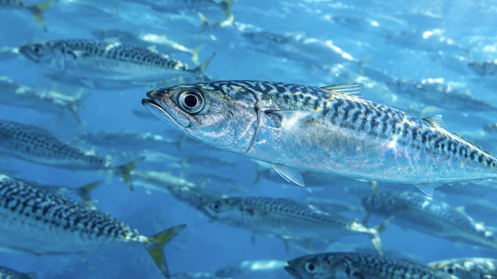
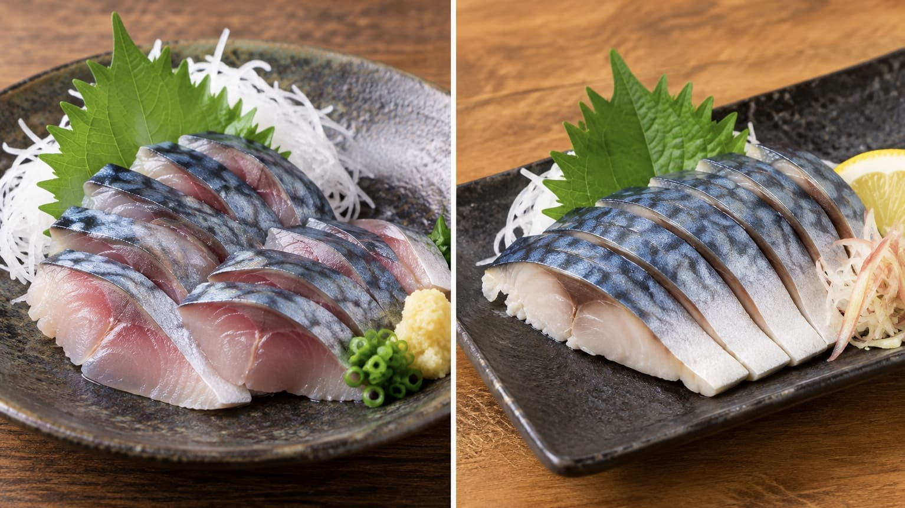

【完全攻略】ただの「大衆魚」じゃない！堤防から沖まで熱くさせるサバの釣り方・生態ガイド

「群れさえいれば誰でも釣れる」――サバに対してそんなイメージを持っていませんか？ 確かにサバは身近なターゲットですが、実は季節・水温・潮・ベイト（エサ）、そして「レンジ（泳層）」を的確に読めるかどうかで、釣果に天と地ほどの差が出る奥深い魚です。ヒットした瞬間に見せる強烈な横走りの引き、そして鮮度抜群のサバを味わえるのは釣り人の特権です。本記事では、堤防でのサビキ釣りから、ナブラを撃つルアーゲーム、沖のビシ釣り・カゴ釣りまで、サバの生態と実践的な攻略法を徹底解説します。
1. 日本で釣れる2大サバ（マサバとゴマサバ）
堤防や沖釣りで私たちがよく目にするサバは、主に「マサバ」と「ゴマサバ」の2種類です。
- マサバ（真サバ）：背中に特徴的な波状の模様があり、腹側は銀白色をしています。比較的冷たい海水を好み、秋から冬にかけて脂が乗る「秋サバ」「寒サバ」として珍重されます。大分県の「関サバ」や三浦半島の「松輪サバ」など、高級ブランド化しているのもこのマサバです。
- ゴマサバ：腹側までゴマのような黒い斑点が散らばっているのが特徴で、マサバよりも暖かい海域を好みます。マサバより脂は少なめですが、夏でも味が落ちにくいという強みがあります。高知県のブランドサバ「清水サバ」はこのゴマサバです。
釣り上げたときは腹が真っ白で「マサバだ！」と思っても、時間が経つと斑点が浮き出てきてゴマサバだったと判明することもあります。
2. サバの生態と行動パターン
サバを釣る上で、群れがどこにいるのかを考えることは非常に重要です。サバにはいくつか特徴的な習性があります。
- 典型的な「回遊魚」：特定の根に居着くのではなく、エサを求めて長距離を泳ぎ続けます。そのため、「昨日は爆釣したのに今日はゼロ」ということもあれば、「突然群れが入ってきてお祭り騒ぎ」になることも普通に起こります。
- 止まると死んでしまう！？：流線型で筋肉質な体を持つサバは、非常に遊泳力の高い魚です。泳ぎながら口から海水を取り込み、エラを通して呼吸をするため、常に泳ぎ続けています。
- 意外と深場も回遊する：表層のイメージが強いですが、マサバの調査では海面から水深約200mまでの範囲を昼夜で移動する「日周鉛直回遊」が確認されています。
- 大好物は小魚とプランクトン：成長に合わせて動物プランクトンから、イワシやシラス、小イカなどの小魚まで幅広く捕食します。ルアー釣りでは「今、サバが何を食べているか」を合わせることが重要です。
3. 釣り場とハイシーズン
防波堤から狙う場合、サバの数釣りが最も盛り上がるのは「初夏〜秋」の水温が高い時期です。
ポイント探しでは、次の2点を優先して確認しましょう。
- ベイト（エサとなる小魚）がいる（最重要！）
- 潮が動いている・潮通しが良い（堤防の先端や外側など）
4. 状況別・サバの攻略メソッド
① 手軽に大爆釣！「サビキ釣り」
防波堤に群れが入っているなら、アミエビをコマセ（撒き餌）にしたサビキ釣りが最強です。
- サバのタナ（泳層）を見つける：同じポイントでも、イワシは上層、アジは下層（底）、サバは中層を泳いでいるのが一般的なパターンです。そのため、毎回底まで落とすのではなく、表層→3m→5m…と探り、釣れた水深（レンジ）を重点的に攻めるのが効率的です。
- 手返しの「速さ」が命：群れが通過する一瞬の勝負になるため、釣れたらすぐに仕掛けを再投入するスピード感が釣果に直結します。沖に鳥山や群れが見える場合は、ウキを使った「飛ばしサビキ」で遠撃ちしましょう。
② ルアーで狙う！「スピード＆レンジ攻略」
魚食性が強く反応が速いサバは、ルアーフィッシングの好敵手です。
- 基本はメタルジグ（5〜20g）：カラーは小魚を模したシルバーを基準に選びます。
- アクションは「速さ」：激しいジャークよりも、一定レンジをキープした「高速ただ巻き」や、軽い「ワンピッチジャーク」に猛烈にアタックしてきます。
- ナブラ撃ちの極意：海面で小魚が逃げ惑う「ナブラ」を発見したら、ど真ん中ではなく「群れの進行方向（数秒後に通る場所）」にルアーをキャストするのが群れを散らさないコツです。
③ 沖の大型を狙う「ビシ釣り・カゴ釣り」
30cmを超える大型で脂の乗ったサバを狙うなら、船からのビシ釣りや遠投カゴ釣りが有効です。
- 横走りに注意：サバは掛かったあとに猛烈なスピードで横走りします。隣の釣り人と仕掛けが絡む「オマツリ」の原因になりやすいため、水面まで寄せたらモタモタせず、太いハリスを信じて強引に船内（陸）へ抜き上げましょう。
5. 【重要】サバを美味しく安全に食べるために
釣ったばかりの新鮮なサバは、刺身やしめサバ、塩焼き、味噌煮と何をしても美味しい魚です。しかし、サバ釣りでは釣るテクニック以上に重要なことがあります。

- 「鮮度」が命！すぐに冷やす：サバは非常に傷みやすい（足が早い）魚です。釣れたら長時間バケツで泳がせず、すぐに締めて氷の効いたクーラーボックスに入れましょう。
- 寄生虫（アニサキス）とヒスタミン食中毒に注意：生食する場合はアニサキスのリスクがあるため、十分な知識と適切な処理（冷凍など）、または加熱が必要です。酢で締めただけではアニサキスは死滅しません。また、常温放置はヒスタミン食中毒の原因になるため厳禁です。
6. サバ釣り上達への近道
サバ釣りで最も大切なのは、高級な道具を使うことよりも「サバの群れが今、どの深さ（レンジ）で、何を食べているか」を考えることです。
この「海を観察する力」を身につければ、あなたのサバ釣りの釣果は劇的に変わるはずです。最高の引きと美味を求めて、防波堤へ向かいましょう！
📍 関東の生息・釣果スポット
※マップ上の赤いドットが釣れるポイントです。